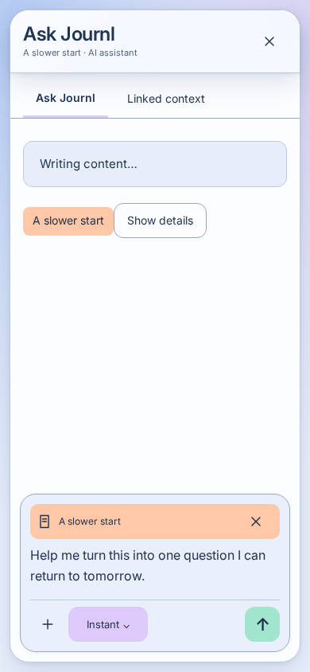
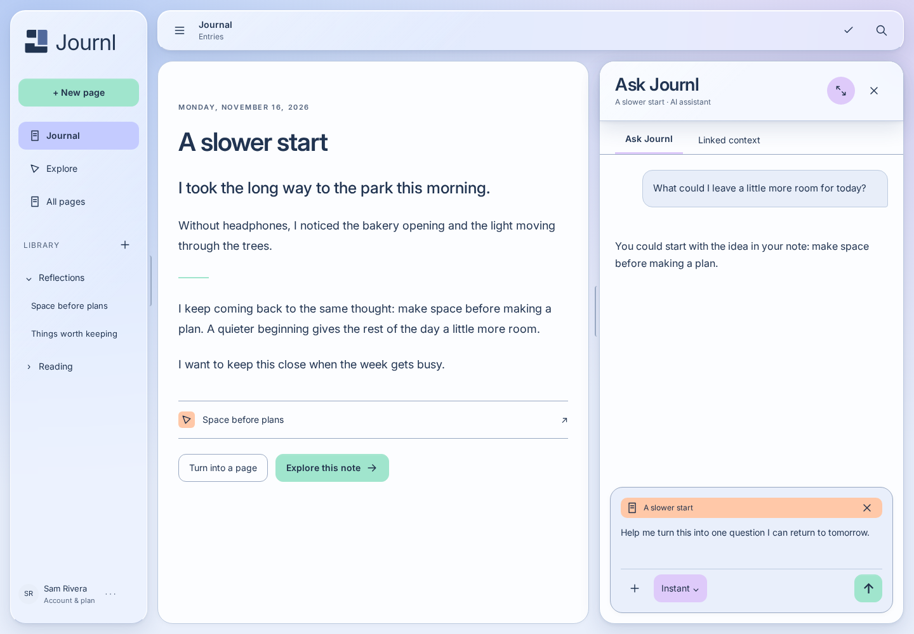
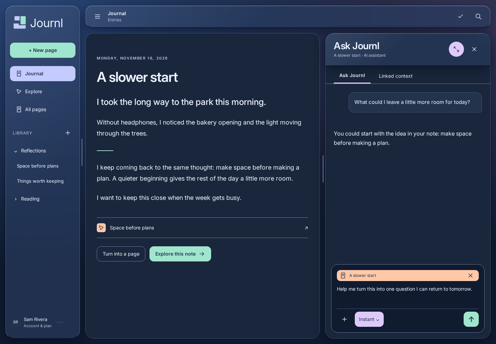
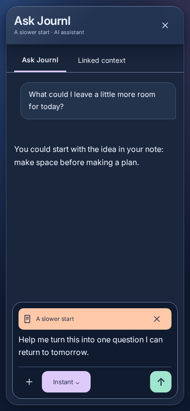

Chat
Approved screens and states. Open a PNG for full resolution. Component reference plates supplement contextual screens; do not implement them as routes.
Writing content
tool-write · /journal · Writing content
Actions and implementation references
+ New page · Journal · Explore · All pages · ⌄ · Reflections · › · Reading · Turn into a page · Explore this note · Ask Journl · Linked context · Show details · Instant ⌄ · ↑ · Entries · Timeline · Nov 16 · History · Close · Instant · Thinking
apps/web/src/components/chat

Visual-system CSS reference


Visual-system CSS reference

Visual-system CSS reference

Visual-system CSS reference
A slower start
chat-unread · /journal · New assistant reply while chat is closed
Actions and implementation references
+ New page · Journal · Explore · All pages · ⌄ · Reflections · › · Reading · Ask Journl · Today’s Journal · Close · Instant · Thinking
apps/web/src/components/chatapps/web/src/components/chatapps/web/src/app/(app)/@chatSidebar/_components/chat-sidebar-trigger.tsxapps/web/src/app/(app)/@chatDrawer/_components/chat-drawer-trigger.tsx

Visual-system CSS reference

Visual-system CSS reference

Visual-system CSS reference

Visual-system CSS reference
Ask Journl
chat-mobile-sheet · /journal · Ask Journl
Actions and implementation references
+ New page · Journal · Explore · All pages · ⌄ · Reflections · › · Reading · Turn into a page · Explore this note · Ask Journl · Linked context · Instant ⌄ · ↑ · Entries · Timeline · Nov 16 · History · Close · Instant · Thinking
apps/web/src/app/(app)/@chatSidebar/_components/chat-sidebar-provider.tsx


Visual-system CSS reference

Visual-system CSS reference


Visual-system CSS reference


Visual-system CSS reference